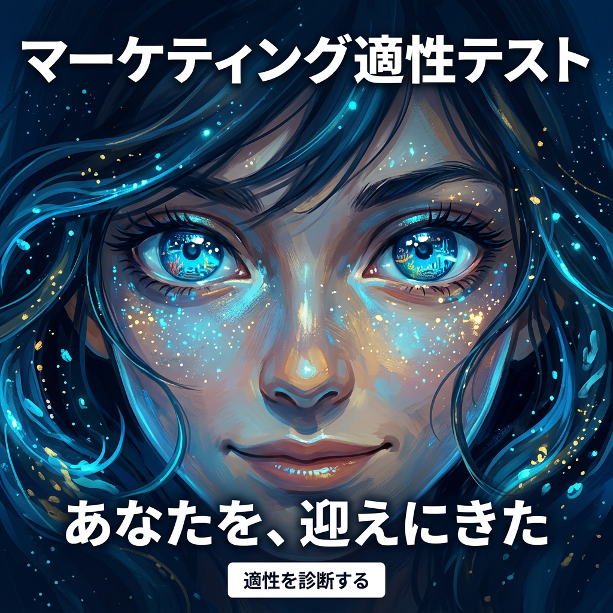
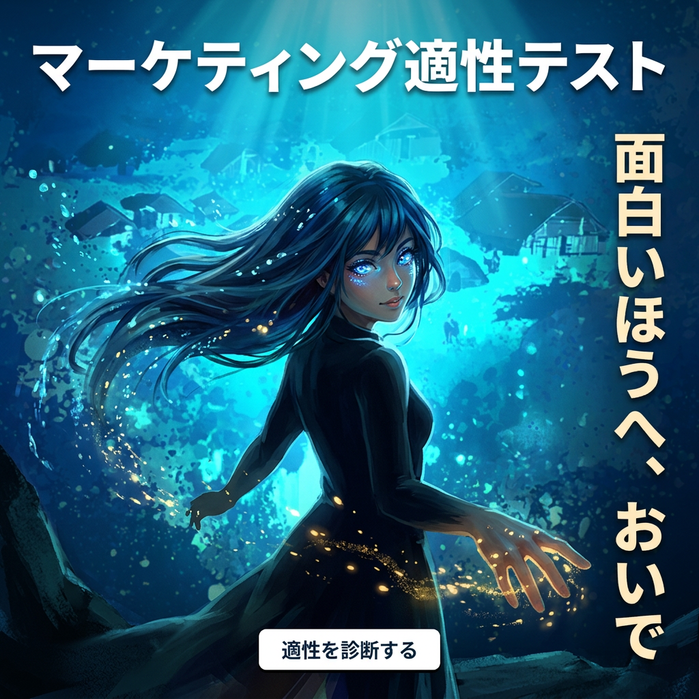
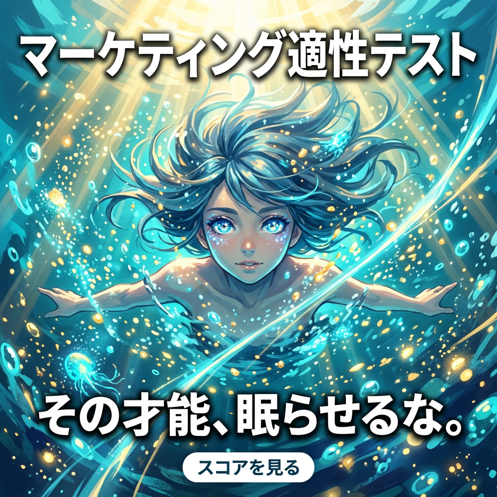
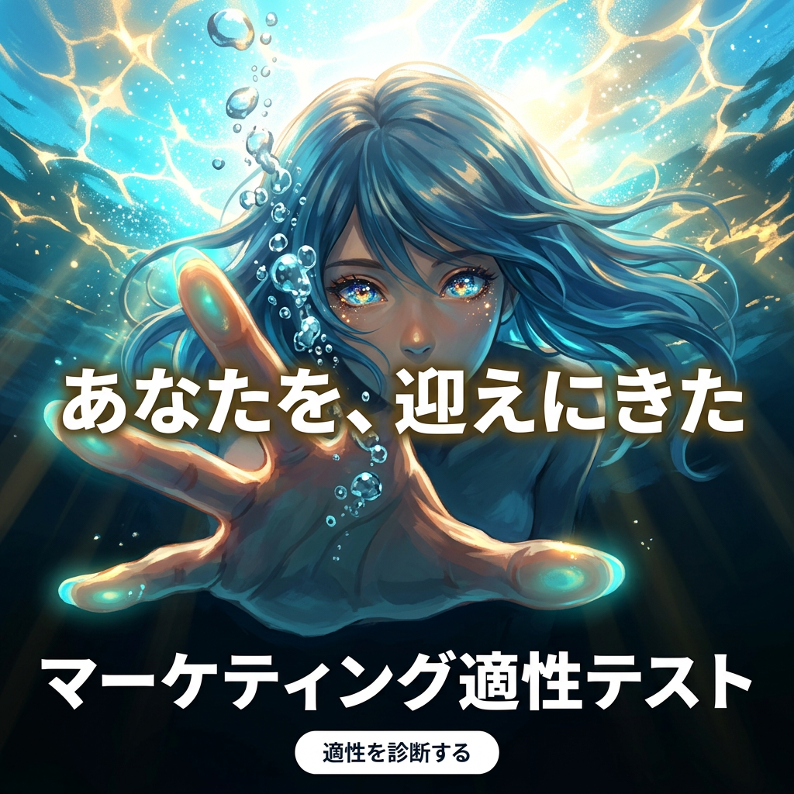
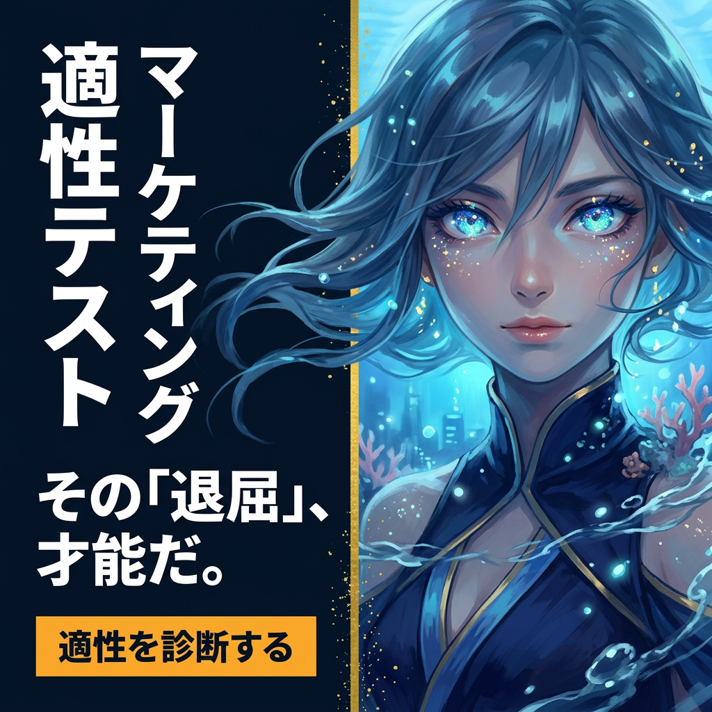
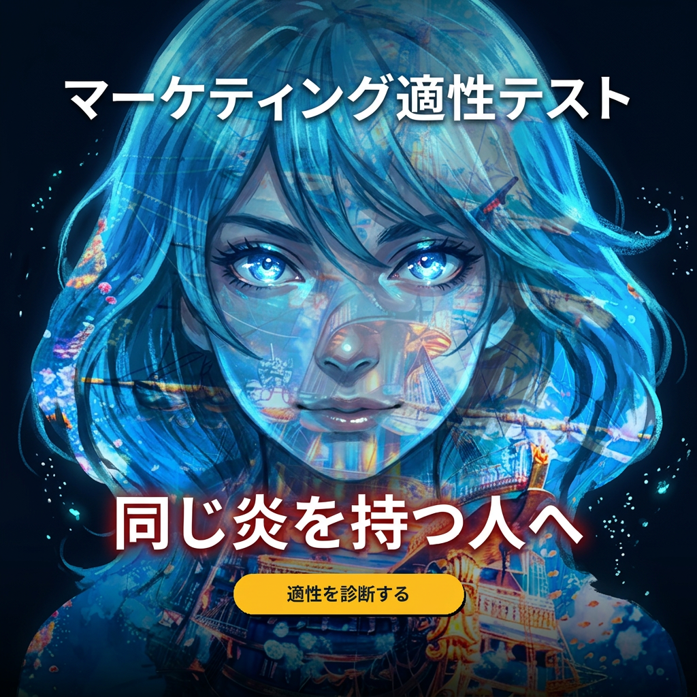

✨ キラキラお目々の女の子 — 彼女の瞳が全ての入り口 ✨

瞳のクローズアップ — 星のようなキラキラの瞳が全てを語る

深海を歩く少女が振り向く — 「ついてきて」

光と泡の中で浮遊 — 自由で力強い、見つめる瞳

手を差し伸べる — 水面の光を背に「私の手を取って」

ポートレート×縦書き — 静かな自信とキラキラの視線

ダブルエクスポージャー — 少女の中に海世界、瞳だけがクリア